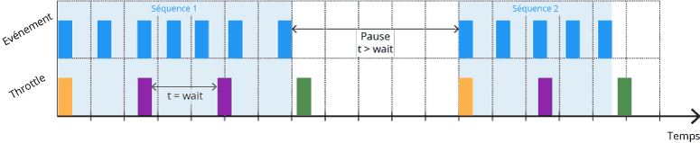
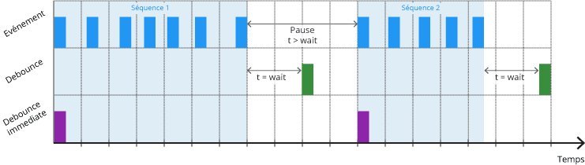

1. Вступ
Досить часто необхідно реалізувати який-небудь функціонал при зміні розміру вікна, скролінгу або вводі користувача. Це може бути сортування колекції й відмальовка результатів, анімація, маніпуляції з DOM-деревом та інше. Все це покращує UX (user experience), але на жаль, дають велике навантаження на браузер, через те що обробники подій спрацьовують надто часто.
Наприклад, якщо прикріпити обробник скрол до елементу і прокрутити цей елемент за допомогою трекпада, колеса прокрутки або просто перетягуванням смуги прокрутки, можна викликати близько 30 подій в секунду. Але повільна прокрутка (свайп) в смартфоні може викликати до 100 подій в секунду. якщо обробник події виконує важкі обчислення і інші маніпуляції з DOM, гарантовано будуть проблеми з продуктивністю.
Throttle і Debounce - це два схожих (але різних за поведінкою) прийому, дозволяють контролювати, скільки разів ми дозволяємо виконання функції з плином часу. Для ознайомлення з цими методами будемо використовувати їх реалізацію з бібліотеки Lodash.
Використовуючи ці два підходи ми не контролюємо як часто браузер буде генерувати події. Ми лише беремо контроль над частотою виконання callback-функції переданої в обробник події.
2. Throttle
Прийом throttle забезпечує контроль над кількістю раз, яке функція може бути
викликана протягом проміжку часу. Тобто дозволяє виконувати функцію не частіше
ніж один раз в N мілісекунд, гарантуючи її регулярне виконання.

window.addEventListener(
'scroll',
_.throttle(() => {
console.log('Scroll event handler invocation every 300ms.');
}, 300),
);
Посилання на документацію _.throttle()
3. Debounce
Прийом debounce гарантує, що функція не буде викликана знову, поки не пройде
певну кількість часу без її виклику. Тобто дозволяє виконати функцію, тільки
якщо пройшло N мілісекунд без її виклику, групуючи множинні виклики в один.

document.querySelector('input').addEventListener(
'input',
_.debounce(() => {
console.log(
'Input event handler invocation after 300ms of inactivity past burst.',
);
}, 300),
);
Посилання на документацію _.debounce()